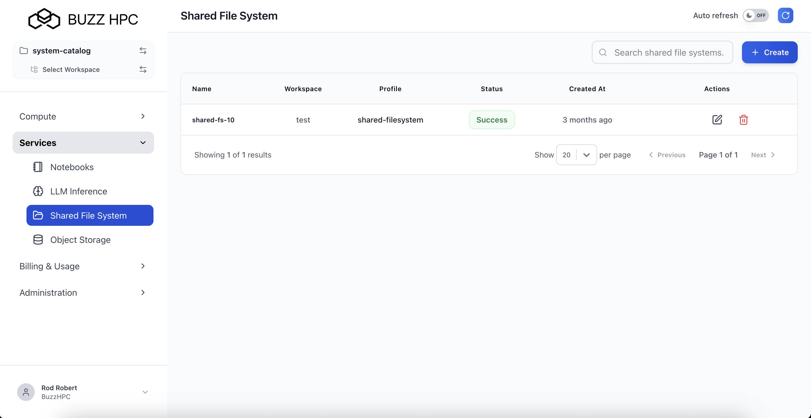
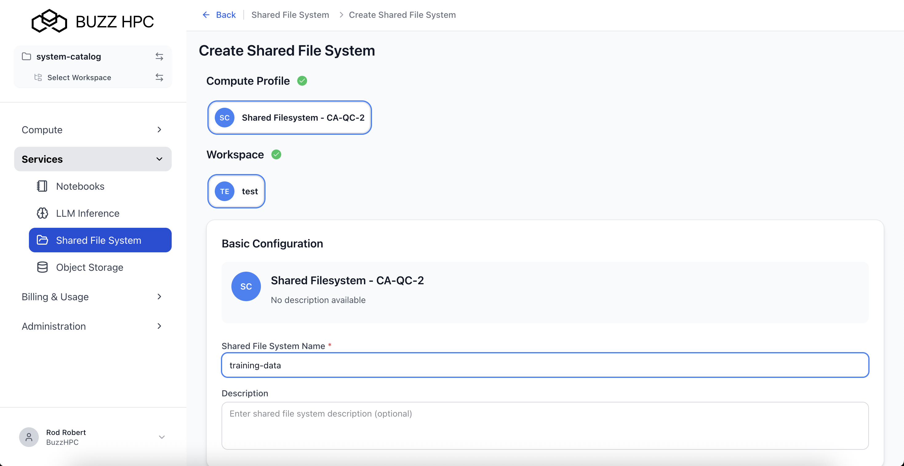
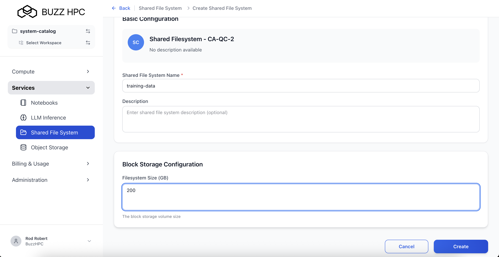
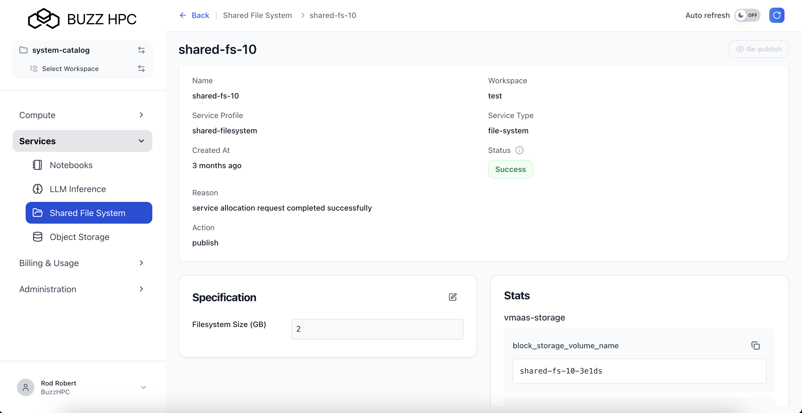
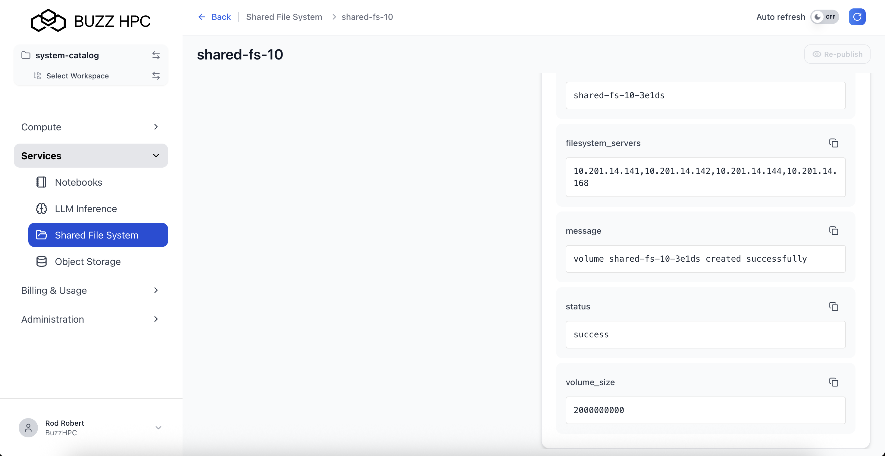

Configure & Use
Users can create, configure, and manage shared storage volumes for use with GPU Virtual Machines.
Create Shared File System¶
Navigate to Services > Shared File System in the left menu, then click + Create.

Select Storage Profile¶
Choose a storage profile based on your performance and capacity requirements.
Select the workspace for the shared storage volume.

Configure Shared File System¶
Basic Configuration¶
- Storage Name (required) - Enter a unique name (e.g.,
ai-datasets) - Description (optional) - Add a description

Storage Quota¶
| Field | Description |
|---|---|
| Quota Size (GB) | Storage capacity allocation |
Set the storage quota based on your data requirements. You can specify the size in gigabytes (GB).

Click Create to provision the shared storage volume.
View Shared File Systems¶
All storage volumes are listed under Services > Shared File System:
| Column | Description |
|---|---|
| Name | Storage volume identifier |
| Workspace | Associated workspace |
| Profile | Storage profile used |
| Quota (GB) | Allocated storage capacity |
| Status | Success, Pending, Failed, or Cancelled |
| Created At | Creation time |
| Actions | Edit or Delete |
Storage Volume Detail View¶
Click on a storage volume name to view details including mount information and connection details.
The detail view shows: - Volume name and workspace - Storage profile and quota - Mount path and endpoint - Deployment status

Mounting to GPU VMs¶
Shared File System volumes can be mounted to GPU Virtual Machines in two ways:
During VM Creation¶
When creating a GPU VM, select the shared storage volume in the Additional Storage section. The volume will be automatically mounted at VM startup.
Manual Mount (Linux)¶
If mounting manually after VM creation, use the mount information from the detail view:
# Install NFS client (if not already installed)
sudo apt-get update
sudo apt-get install nfs-common
# Create mount point
sudo mkdir -p /mnt/shared-storage
# Mount the volume
sudo mount -t nfs <storage-endpoint>:<mount-path> /mnt/shared-storage
# Verify mount
df -h /mnt/shared-storage
Add to /etc/fstab for automatic mounting on reboot:
Multi-VM Access¶
The same storage volume can be mounted to multiple GPU VMs simultaneously:
- Create the shared storage volume
- Attach or mount to first GPU VM
- Attach or mount to additional GPU VMs
All VMs will have read/write access to the same data.
Warning
When multiple VMs access the same volume, coordinate file access to avoid conflicts. Consider using file locking mechanisms for concurrent writes.
Managing Storage¶
Resize Quota¶
To increase storage capacity, edit the shared file system and update the quota size.
Monitor Usage¶
Check storage utilization from the detail view or by running df -h on mounted VMs.
Delete Storage Volume¶
Click the delete icon in the Actions column to delete a storage volume.
Danger
Deleting a shared storage volume permanently removes all data. Ensure data is backed up before deletion. Mounted VMs will lose access.
Best Practices¶
Performance Optimization¶
- Use shared storage for datasets accessed by multiple VMs
- Keep frequently accessed data on local VM storage for best performance
- Organize large datasets into subdirectories
Data Management¶
- Regular backups of critical data
- Clean up unused data to optimize costs
- Use descriptive naming conventions
- Document mount points and paths
Security¶
- Restrict access to appropriate workspaces
- Use appropriate file permissions
- Monitor access logs